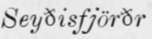
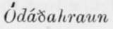

The Probable Genesis Of Askja And Iceland. Part 4
Description
This section is from the book "Askja: Iceland's Largest Volcano", by W. G. Lock. Also available from Amazon: Askja: Iceland's Largest Volcano.
The Probable Genesis Of Askja And Iceland. Part 4
As observed in the second chapter, extensive tracts of the island, as well in the coastal regions as inland, have a far greater altitude, and are unquestionably an older formation than the plateau of the interior, and other less elevated parts of the island. The coastal region on the east and north mainly consists of semi-detached flat-topped mountain masses varying little in altitude, about 2,000 feet, with here and there tracts far more mountainous and much broken up, where similar masses have been tilted aside, the upheaved portions raised to a greater altitude by several hundred feet than the summits of their fellows, as also is the case where other masses have been bodily uplifted, while in some places masses lie lower, having apparently subsided. A mass of this older formation that has been tilted inland, is to be seen directly opposite Akureyri, with the angle at which it lies clearly shown by the weathering of the softer strata.
The whole of the north-west peninsula is a mass of this older formation, and it is believed that nowhere upon it has a lava-flood welled forth in post-tertiary times; a most important fact to be borne in mind when considering the geological history of Iceland.
In the interior and south part of the island there are also extensive tracts of this older formation, but they have a greater altitude than in the north, and are mostly covered with glaciers ; therefore a glance at Gunnlaugsson's large map, where the Joklar are coloured blue, will show in an instant their position. There are, however, in every part of the island, save the north-west peninsula and other tracts of the older plateau, smaller masses that are not marked as Joklar, and some volcanic mountains of post-tertiary formation that are. In the west it is not an easy matter to point out upon the map the older from the newer formation farther seaward in that direction than the Eyriks Jokull, Lang Jokull, Hloftufell, Torfa Jokull, and those to the southward, all, or most ol which are masses of the older formation.
The flat-topped mountain masses of the coast, and the larger ice-clad Johlar of the interior, are portions, in all probability, of one of the basaltic plateaux of north-western Europe (respecting which Professor Geikie contributed an excellent paper to a recent number of 'Nature'), a miocene, or middle tertiary, formation, while the plateau in the interior of the island, to the depth at least of the strata bared by rifts, is post tertiary beyond a doubt.
Throughout this little work I have endeavoured as much as possible to avoid making use of geological technicalities likely to mystify the general reader. I find, however, in this concluding chapter, that it is impossible to describe the probable genesis of Iceland without making use of a few. Therefore, 1 think it will be well here, in the interest of non-geological readers, to explain that throughout this chapter tertiary is the term applied to the igneous rock formations of Iceland that had their existence prior to the glacial epoch-about which I will say a few words presently, and post-tertiary to all formations of a later date.
Geologists assign many changes of the earth's surface, a number of rock formations, and a long-duration to what they term the tertiary period, and bring it to a close with the glacial epoch. This epoch was one of great disturbance of the earth's crust from other causes than the action of the ice, subsidences and upheavals to the extent of 1,800 to 2,000 feet taking- place over the whole of the northern hemisphere from the 40th or 42nd parallel northward.
Prior to this epoch, there is every reason to believe, there existed north of Scotland an extensive plateau, extending far into the Arctic sea, built up of igneous rocks-tuffs, basaltic and other lavas-which had welled forth from rifts in the earlier rock formations of the earth's crust, and been deposited in horizontal strata one above the other in a precisely similar manner to the sheets of basaltic-lava underlying the Myvatns Orcefi. Professor Geikie is of opinion that the hills of Antrim, Mull, Morven, and Skye, the Farces, and part of Iceland are surviving fragments of this formation; and there can exist no reasonable doubt that he is right, while to judge from the photographs of the cliffs of some islands in the Arctic seas, taken during Mr. Leigh Smith's very successful cruise last summer, there are fragments still further north.
There were, doubtless, numerous vents in the earth's crust through which these vast sheets of molten rock welled forth, as similar formations are found on the western continent in the same latitudes, and elsewhere; but whether they were longitudinal, or latitudinal rifts of any great length, there is no evidence to show. However, one thing is tolerably certain-Iceland lies above one of these vents and marks a spot where, subsequently to the glacial-epoch, igneous rock has welled forth and builded up a plateau very similar to the older one, though comparatively inconsiderable as to extent.
There is no dearth of evidence that the flat-topped mountain masses on the north and east coasts are of far older formation than the inland plateau, nor that the low-lying portions of the coast and many of the higher volcanic mountains, and several of the ice-clad heights are coeval in formation with the interior. I have in various places, from  on the east to the south of the north-west peninsula, examined the upper strata of the flat-topped mountain masses on the north coast, and tltey do not correspond with those of the existing inland plateau, the former having conglomerate and tuft' strata alternating with basaltic and other lavas (in places three or four lava-strata will be found resting one upon the other with a stratum of tuff or conglomerate below and another above), whereas the uppermost strata of the latter, bared by the rifts to a depth of quite two hundred feet, are exclusively of lava that has been deposited unchanged, save by congelation, with thin layers of clinker-like fragments that have never been abraded by ice or waterworn, marking the divisions between; therefore it is evident these mountain masses, even if they were formerly a continuation of the substrata underlying the existing inland plateau, must have been upheaved prior to the deposition of the later lava-flows bared by the rifts, or the interior now covered by them must have subsided. Moreover, while the coastal valleys and fjord inlets sbow signs of glacial action, the surface of the superficial sheet of lava on the plateau has never been abraded by ice, otherwise the rounded summits of the dome-shaped bubbles seen in the  and elsewhere, would have been ground away: therefore it is certain the later ones must have issued subsequently to the glacial epoch: that they issued subeerially and did not course down an inclined plane, but spread out in an immense basin inclosed-or more strictly, as many gaps doubtless existed, partly inclosed-by the fragments of the miocene plateau is likewise certain, or they would not have been deposited so horizontally and evenly.
Continue to:
- prev: The Probable Genesis Of Askja And Iceland. Part 3
- Table of Contents
- next: The Probable Genesis Of Askja And Iceland. Part 5